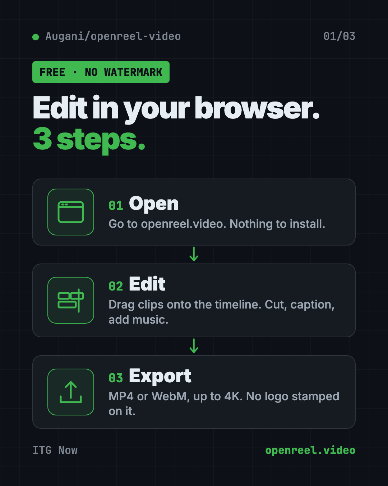
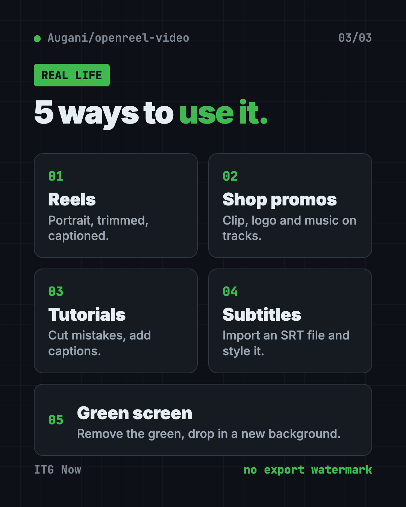
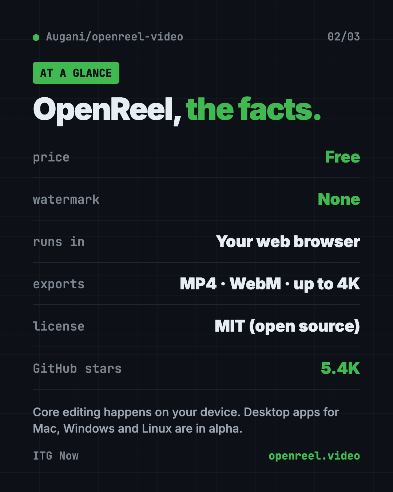

OpenReel: Free Online Video Editor, No Watermark (2026)
- Published 15 Oct 2026
- Updated 16 Oct 2026
- 8 min read
- License MIT
- By the ITG Now team
OpenReel is a free online video editor with no watermark on your finished video. You open it in your web browser, drop in your clips, and cut, caption and export, with the editing done on your own device.
You film a great clip. You want to trim it, add captions and some music. Then the app says: pay up, or get a logo stamped on your video. This guide shows how OpenReel skips that deal, what it can do, and how to start in minutes.
Key takeaways
- Free, with no export watermark. The README says "your finished video stays yours."
- Runs in your browser. No install for the web version. Desktop apps exist too, but they are early test versions.
- Your footage stays on your device. Core editing and rendering happen on your computer, per the README.
- Real editing tools. Multiple tracks, captions, audio mixing, color, keyframes, and exports up to 4K.
- Optional AI. You can describe edits in plain words, using your own AI account.
What is OpenReel Video?
OpenReel is an open-source video editor. Open source means the code is public, so anyone can read it or improve it. It uses the MIT license, which lets you use it for personal or paid work.
The README sums it up: "Your footage. Your timeline. Your final cut."
The main version lives at openreel.video and runs in your web browser. There are also desktop apps for Mac, Windows and Linux. The README says those are still in "alpha," which means an early test version.
It is made by developer Augustus Otu and contributors. On GitHub it has about 5.4K stars. Stars are like bookmarks, so a growing crowd is following it.

How to use OpenReel (real examples)
Here are everyday ways people can put it to work.
- Post a Reel or TikTok. Switch to portrait, trim the boring start, add captions, and export an MP4.
- Make a product promo for your shop. Stack your clip, logo and music on separate tracks. Add a title and a fade.
- Record a class tutorial. Cut out the mistakes, add captions so students can read along, and turn the music down while you talk.
- Add subtitles to an old video. Import an SRT file, which is a common subtitle file, and style the words.
- Fix a green-screen shot. Use chroma key to remove the green background, then drop in a new one.
💡 Tip: Make your timeline match where you'll post first. Portrait for Reels and TikTok, wide for YouTube, square for some feeds.
What can OpenReel do?
Here is the README's toolbox, in plain words.
- Cut and trim. Trim, split, crop, rearrange clips and change speed. "Ripple delete" closes the gap when you remove a piece.
- Build in layers. Put video, audio, text and graphics on separate tracks.
- Add motion. Use transitions and keyframes. A keyframe tells an item where to be at a certain moment.
- Captions and titles. Create and style captions, import SRT subtitles, and add animated titles.
- Fix the sound. See sound waves, set volume, add fades and EQ. "Audio ducking" lowers the music when someone speaks.
- Color your video. Use color wheels, curves and LUTs, which are ready-made color looks. Add effects, masks and chroma key.
- Never lose work. Autosave, undo and redo. You can also export project files as backups.

Is OpenReel really free?
Yes. The editor is free and open source, and the README says there is no export watermark.
The only thing that may cost money is the optional AI Editor. It uses your own OpenAI, Anthropic or similar account. The README says "provider usage may cost money."
Is my video private?
Mostly, yes. The README says "core editing and rendering happen on your device." You can import, cut, preview and export without uploading your video to a server.
If you turn on AI or other connected features, your data goes to that provider. Their rules apply then.
⚠️ Heads up: Your browser can clear its stored data. The README says to keep backups of your project files and your original videos.
OpenReel at a glance
| Price | Free (AI help may cost money with your own account) |
| Watermark | None |
| Works offline | Editing runs on your device; you open the web editor online |
| Platforms | Any modern web browser; desktop apps for Mac, Windows, Linux (alpha) |
| License | MIT (open source) |
| Exports | MP4, WebM, up to 4K; ProRes on desktop |
| Best for | Creators, small shops and teachers who want a free editor |

How to start with OpenReel
You need a computer and an up-to-date browser. The README says Chrome or Edge is "a good starting point."
- Open OpenReel at openreel.video and create a project.
- Import your media and drag clips onto the timeline. The timeline is the strip where you arrange your video.
- Shape your edit with cuts, captions, music, color and transitions.
- Export your video using a preset or your own settings.
That's it for the web version. Nothing to install.
Get the desktop app
Prefer an app? Download a Mac, Windows or Linux build from the Releases page on GitHub. The desktop version adds pro exports like ProRes and see-through backgrounds. Remember, it is still alpha.
Run your own copy (for developers)
You need Node.js and pnpm, two free developer tools. Then copy and paste this:
git clone https://github.com/Augani/openreel-video.git
cd openreel-video
pnpm install
pnpm dev
Open the address it prints, usually http://localhost:5173.
⚠️ Heads up: Big 4K projects need a strong computer. The README says memory, graphics chip and browser all affect which settings work and how fast exports finish.
Let Claude or Codex set it up for you
You don't need an AI helper for the web version. But if you want your own copy on your computer, one can do the setup. Claude Code and OpenAI Codex are AI helpers that run setup steps for you. You paste a request, and you approve each step.
Copy and paste this:
Please help me run OpenReel Video on my computer from github.com/Augani/openreel-video.
1. Check if I have Node.js and pnpm. If not, explain how to install them first.
2. Clone the repo, run "pnpm install", then "pnpm dev".
3. Explain each step before you run it.
4. Tell me the local address to open in my browser.
Then try asking:
Find the latest OpenReel desktop release for my computer and help me install it.
I have a long video. Give me a step-by-step plan to cut it into a 30-second Reel in OpenReel.
Walk me through connecting my own AI account to OpenReel's AI Editor, and tell me what it might cost.
What are OpenReel's limits?
- Desktop apps are alpha. Expect rough edges there.
- Your computer sets the speed. Browser, memory and graphics chip all matter.
- Browser storage can be wiped. Keep backups.
- AI is bring-your-own. You need your own AI account, and it may cost money.
Our take
OpenReel is a real video editor that costs nothing and leaves no watermark. For anyone who posts short videos and is tired of paying monthly to remove a logo, it is well worth a try.
What we like:
- No watermark and no paid tier for the editor.
- Works in the browser with nothing to install.
- Your footage stays on your device.
- A full set of tools: tracks, captions, audio, color, keyframes.
- Exports up to 4K.
What to watch for:
- Desktop builds are still early.
- Older or weaker computers may struggle with big projects.
- Don't trust the browser alone with important work. Save backups.
Want more free video tools? Compare it with OpenCut, the free CapCut alternative. Want AI to make the whole video for you? Read our OpenMontage guide. For screen recordings and demos, try Recordly.
FAQ
Is OpenReel a free online video editor with no watermark?
Yes. OpenReel is free and open source, and the README says there is no export watermark.
Do I need to install anything to use OpenReel?
No. The web editor runs in your browser at openreel.video. Desktop apps are optional.
Does OpenReel upload my videos?
No, not for core editing. The README says editing and rendering happen on your device. Optional AI features do send data to the provider you pick.
Can OpenReel export in 4K?
Yes. It has resolution presets up to 4K. Your browser, memory and graphics chip affect what works and how fast.
Does OpenReel have AI editing?
Yes, optionally. You describe an edit in the AI Editor panel, using your own OpenAI, Anthropic or compatible account. That provider may charge you.
Which browser works best for OpenReel?
The README suggests an up-to-date Chrome or Edge as a good starting point.
Get OpenReel: github.com/Augani/openreel-video
More free voice and audio tools
- VoiceStudio VoiceStudio is a free ElevenLabs alternative. Clone a voice, dub videos and turn text into speech on your own Mac, Windows or Linux computer.
- Folia Folia is a free animated lyrics music player that shows full-screen moving lyrics for your local music, Navidrome and more. What it does and how to start.
- Brag Brag is a free AI launch video maker. Type one command in Claude Code or Codex and it turns your project into a short video with music and share text.
- Meetily Meetily is a free AI meeting note taker. It transcribes your calls live and writes summaries on your own computer, so recordings never have to leave it.
- Open Notebook Open Notebook is a free NotebookLM alternative you run yourself. Chat with your PDFs and videos, get cited answers, and turn notes into podcasts.
- Handy Handy is a free offline voice typing app. Press a key, talk, and your words appear in any app on Mac, Windows or Linux. Your voice stays on your computer.
Latest AI news
- Meta gives away its big Muse Spark AI for free
- ByteDance, Alibaba, Tencent order $35B of Nvidia chips
- Judges citing fake AI-made law face few consequences
- OVHcloud plans its own AI model in early 2027
Keep reading

VoiceStudio: Free ElevenLabs Alternative
VoiceStudio is a free ElevenLabs alternative. Clone a voice, dub videos and turn text into speech on your own Mac, Windows or Linux computer.

HyperFrames: Make AI Videos From HTML
HyperFrames is a free tool that makes AI video from HTML. Your AI agent writes a web page, and HyperFrames renders it into an MP4 video.

Folia: Free Animated Lyrics Music Player
Folia is a free animated lyrics music player that shows full-screen moving lyrics for your local music, Navidrome and more. What it does and how to start.